This chapter compares three operating models because cloud waste work changes shape when finance, product, or platform engineering owns the rhythm.
Industry Solutions Whitepaper Series
Part 3 defined engineering guardrails. Part 4 adapts those controls to different organizational structures so playbooks remain usable in the real world.
Cloud governance fails when teams copy a playbook from a different operating model. A finance-led organization, a fast-moving SaaS team, and a platform-heavy engineering company face different constraints. Part 4 provides playbooks that respect those constraints without weakening evidence quality.
1) Why operating models matter more than provider count
Technical buyers often compare tools by provider coverage, scanner speed, or dashboard depth. Those dimensions matter, but rollout success is more strongly affected by organizational shape: who owns decisions, who absorbs remediation workload, and who signs off risk. A governance program that ignores this structure can look complete on paper and still underperform.
In our rollout reviews, teams with similar cloud estates showed very different outcomes because approval authority and execution ownership differed. The lesson is practical: design governance as an operating model first, then optimize tooling around that model.
2) Playbook A: finance-led organizations
Typical shape: finance drives cost targets, engineering executes changes, security reviews exceptions. Common risk is “analysis surplus, action deficit.” Finance has clear visibility, but engineering ownership arrives late and remediation windows slip.
Recommended cadence:
- Weekly finance-engineering triage with owner assignment on all high-confidence findings.
- Bi-weekly security review only for exception or high-impact classes.
- Monthly executive review using realized savings and backlog aging.
Control focus: evidence consistency and closure accountability. Finance-led teams should resist expanding dashboards before closure quality is stable.
3) Playbook B: product-led SaaS teams
Typical shape: product release velocity is high, infrastructure ownership is distributed, and incident pressure can override cleanup plans. Main risk is recurrence: teams close one class of waste and regenerate it in the next release wave.
Recommended cadence:
- PR-time linting for lifecycle tags and risky anti-patterns.
- Post-release scoped scans for high-change services.
- Sprint-close review on unresolved high-confidence findings.
Control focus: recurrence prevention and exception expiry. SaaS teams need lighter process, but stronger automation discipline.
4) Playbook C: platform-centric engineering groups
Typical shape: centralized platform teams support many service teams. Shared accounts and shared infrastructure increase routing complexity. The common failure mode is ownership ambiguity: everyone can see the issue, no one owns closure.
Recommended cadence:
- Service-boundary routing matrix maintained by platform governance owners.
- Weekly closure board with re-assignment limits.
- Quarterly policy recalibration based on recurrence and reassignment rates.
Control focus: routing precision and low reassignment churn. Platform teams should treat routing quality as a primary KPI, not an administrative detail.

5) Cross-industry anti-patterns to avoid
- Single global SLA for all findings: high-noise classes consume attention and bury high-impact actions.
- No exception expiry: temporary waivers become permanent risk and recurring debt channels.
- Potential savings as sole KPI: programs report optimism while unresolved backlog keeps growing.
- Account-only routing: shared-account teams suffer ticket ping-pong and leadership frustration.
These anti-patterns are not sector-specific. They appear in banking, SaaS, media, and platform organizations alike. The difference is only where pain is visible first.
6) Harmonizing handoff language across teams
One practical improvement with outsized impact is a shared handoff vocabulary. Use stable terms for finding class, risk lane, approval status, owner, due date, and closure proof. If each function describes the same object differently, review time expands and trust declines.
A useful pattern is to append a short “decision sentence” to each high-priority finding: “Class X in lane Y is assigned to owner Z, approved under route A, and due on D with proof package P.” This single line reduces misinterpretation in executive and audit review.
7) Field snapshots across three operating models
Finance-led snapshot. A regional enterprise set aggressive quarterly savings targets but routed all technical actions through one central operations queue. Reporting looked strong; execution lagged. Introducing domain-owner routing with fixed weekly triage reduced backlog aging and improved realized impact without increasing review overhead.
SaaS snapshot. A product team with weekly releases repeatedly recreated idle networking artifacts in test environments. The team already had strong dashboards. What changed outcomes was adding pre-merge tag checks and post-release scoped scans with owner-level recurrence reporting.
Platform snapshot. A platform group supporting multiple service teams used account-level routing. Ticket churn was high and resolution accountability was weak. After shifting to service-boundary routing and capping reassignments per cycle, closure lead time improved and exception volumes became predictable.
8) How to select and evolve a playbook
Use a two-question gate:
- Where does decision authority sit today: finance, product engineering, or platform governance?
- What is the dominant failure pattern: late ownership, recurrence, or routing churn?
The answer pair determines your starting playbook. After two full cycles, reassess with outcome KPIs. If the dominant failure pattern changes, update playbook emphasis accordingly. Governance playbooks are operating tools, not static labels.
9) Shared controls that remain constant across industries
Despite model differences, three controls are universally effective: explicit ownership, bounded exception lifetime, and evidence-linked closure. Organizations that protect these controls can customize cadence and meeting structure without losing governance integrity.
For SEO and buyer education, this also gives a coherent narrative: different team models, same control spine. It helps readers move across articles without feeling the framework changes arbitrarily.
10) Migration path between playbooks
Operating models are not static. Companies often move from product-led execution to platform-centric governance as they scale. Others start finance-led and later decentralize ownership to service teams. A durable whitepaper must describe migration paths, not only end-state playbooks.
A practical migration sequence:
- Phase M1: preserve existing cadence, but introduce shared finding taxonomy and owner matrix.
- Phase M2: transition routing from account-level to service-boundary level.
- Phase M3: harmonize KPI semantics and executive reporting format across teams.
Skipping M2 is the most common failure. Teams report enterprise-level KPIs while still routing work through account-level ownership, which keeps reassignment churn high and blurs accountability.
11) Partner-aware positioning for technical buyers
Some organizations will continue using heavyweight SaaS attribution platforms while adding local-first execution for sensitive or high-friction workflows. This is a valid and often effective architecture. The objective is not tool replacement by default; it is boundary-fit execution.
For buyers, this framing improves decision quality: use SaaS where macro attribution depth is critical, use local-first where custody boundaries and action-grade evidence determine delivery speed. A partner-aware strategy avoids false binary decisions and supports phased adoption.
12) Implementation patterns that travel well across teams
Across all three models, two implementation patterns repeatedly proved practical. First, assign a single governance operator per review window who owns packet quality, not decision authority. This improves consistency without centralizing decisions. Second, publish a short post-review memo that captures which classes were resolved, which were deferred, and why. That memo becomes the connective tissue between weekly operations and monthly leadership reviews.
These patterns are lightweight enough for small teams and still useful in larger organizations. They also strengthen internal-link coherence for readers: process patterns remain stable while operating-model details vary.
Industry Pain Signals and Required Outcomes
SaaS and internet teams. Pain signal: high release speed conflicts with cleanup ownership. Required outcome: lightweight playbook with strict recurrence tracking.
Fintech and payments. Pain signal: finance targets are clear but execution stalls in risk-review queues. Required outcome: tiered approval model and predictable exception lifecycle.
Healthcare. Pain signal: compliance concern drives manual workflows that do not scale. Required outcome: repeatable evidence templates with role-scoped review artifacts.
Manufacturing and retail. Pain signal: regional operations run with different terms and KPI definitions. Required outcome: shared taxonomy and centralized metric semantics across regions.
Implementation Checklist for Part 4
- Select a playbook by operating model before expanding policy surface area.
- Define one routing matrix per service boundary for shared-account environments.
- Use recurrence and reassignment as first-class operational KPIs.
- Enforce exception expiry across all playbooks.
- Standardize decision-sentence format in all weekly and monthly packets.
Related Internal References
- Part 3: guardrail design and runtime execution controls.
- Playbooks: execution templates for account and team operations.
- Providers: provider coverage and boundary considerations by environment.
- Company: operating philosophy and release discipline context.
Next Chapter
Continue to Part 5: Rollout Roadmap, Governance KPIs, and Executive Reporting to convert playbooks into a measurable 30/60/90 rollout plan and leadership scorecard.